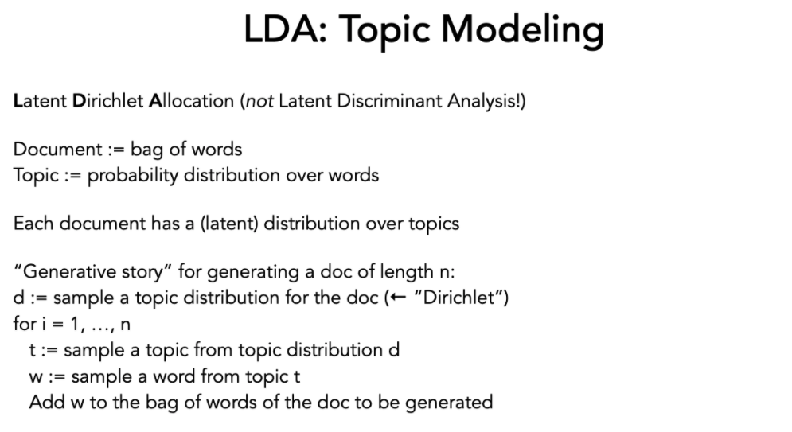
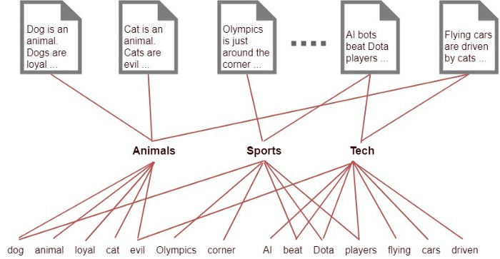

LDA (Latent Dirichlet Allocation)
LDA (Latent Dirichlet Allocation)¶
LDA is a generative statistical model that allows sets of observations to be explained by unobserved groups that explain why some parts of the data are similar. For example, if observations are words collected into documents, it posits that each document is a mixture of a small number of topics and that each word’s presence is attributable to one of the document’s topics.
To connect this back to bag-of-words, the former approach can be thought of as a simplistic probabilistic model of documents as distributions over words. The bag-of-words vector then represents the best approximation we have for the unnormalized distribution-of-words in each document; but document here is the basic probabilistic unit, each a single sample of its unique distribution.
The crux of the matter, then, is to move from this simple probabilistic model of documents as distributions over words to a more complex one by adding a latent (hidden) intermediate layer of K topics.
From CSCD25, Ashton Anderson 
import os
import json
import pandas as pd
import numpy as np
import sys
sys.path.insert(0, '..')
import std_func
df = pd.read_csv("../data/preprocessed.csv")
---------------------------------------------------------------------------
ModuleNotFoundError Traceback (most recent call last)
Input In [1], in <cell line: 7>()
5 import sys
6 sys.path.insert(0, '..')
----> 7 import std_func
9 df = pd.read_csv("../data/preprocessed.csv")
File ~/work/ubineer_nlp_research/ubineer_nlp_research/content/richard/../std_func.py:6, in <module>
4 import numpy as np
5 import re
----> 6 import nltk
7 from nltk.corpus import wordnet
8 from nltk.stem import WordNetLemmatizer
ModuleNotFoundError: No module named 'nltk'
from sklearn.decomposition import LatentDirichletAllocation
from sklearn.feature_extraction.text import TfidfTransformer
from sklearn.feature_extraction.text import CountVectorizer
from sklearn.pipeline import Pipeline
pipe = Pipeline([('count', CountVectorizer(
ngram_range = (2,4),
stop_words = 'english', max_features = 600)),
('tfidf', TfidfTransformer()),
('lda', LatentDirichletAllocation(n_components = 8))]).fit(df["coDescription_stopwords"])
---------------------------------------------------------------------------
NameError Traceback (most recent call last)
Input In [2], in <cell line: 6>()
3 from sklearn.feature_extraction.text import CountVectorizer
4 from sklearn.pipeline import Pipeline
6 pipe = Pipeline([('count', CountVectorizer(
7 ngram_range = (2,4),
8 stop_words = 'english', max_features = 600)),
9 ('tfidf', TfidfTransformer()),
---> 10 ('lda', LatentDirichletAllocation(n_components = 8))]).fit(df["coDescription_stopwords"])
NameError: name 'df' is not defined
Below we have the matrix of our 8 chosen topics and their vectors as they lie in our 600 term vector space:
pd.DataFrame(pipe["lda"].components_)
---------------------------------------------------------------------------
NameError Traceback (most recent call last)
Input In [3], in <cell line: 1>()
----> 1 pd.DataFrame(pipe["lda"].components_)
NameError: name 'pipe' is not defined
We are explaining documents (companies in our case) by their distribution across topics, which themselves are explained by a distribution of words

Below we have the top 5 terms for each topic that we’ve created from our corpus listed:
lda_weights = pd.DataFrame(pipe["lda"].components_, columns = pipe["count"].get_feature_names_out())
lda_weights = lda_weights.melt(ignore_index = False).reset_index()
lda_weights.groupby('index').apply(lambda x:x.sort_values('value', ascending=False).iloc[0:5])
---------------------------------------------------------------------------
NameError Traceback (most recent call last)
Input In [4], in <cell line: 1>()
----> 1 lda_weights = pd.DataFrame(pipe["lda"].components_, columns = pipe["count"].get_feature_names_out())
3 lda_weights = lda_weights.melt(ignore_index = False).reset_index()
5 lda_weights.groupby('index').apply(lambda x:x.sort_values('value', ascending=False).iloc[0:5])
NameError: name 'pipe' is not defined
Here is the DataFrame of companies with their probability of belonging to one of the 8 topics:
lda_df = pd.DataFrame(pipe.transform(df['coDescription']))
lda_df
---------------------------------------------------------------------------
NameError Traceback (most recent call last)
Input In [5], in <cell line: 1>()
----> 1 lda_df = pd.DataFrame(pipe.transform(df['coDescription']))
2 lda_df
NameError: name 'pipe' is not defined
plot = std_func.pca_visualize_2d(lda_df, df.loc[:,["name","SIC_desc"]])
---------------------------------------------------------------------------
NameError Traceback (most recent call last)
Input In [6], in <cell line: 1>()
----> 1 plot = std_func.pca_visualize_2d(lda_df, df.loc[:,["name","SIC_desc"]])
NameError: name 'std_func' is not defined
std_func.pca_visualize_3d(plot)
---------------------------------------------------------------------------
NameError Traceback (most recent call last)
Input In [7], in <cell line: 1>()
----> 1 std_func.pca_visualize_3d(plot)
NameError: name 'std_func' is not defined
From the explained variance ratio, we see that the top three dimensions don’t actually explain that much of the variation that exists within our data/companies.
plot[0].explained_variance_ratio_
---------------------------------------------------------------------------
NameError Traceback (most recent call last)
Input In [8], in <cell line: 1>()
----> 1 plot[0].explained_variance_ratio_
NameError: name 'plot' is not defined